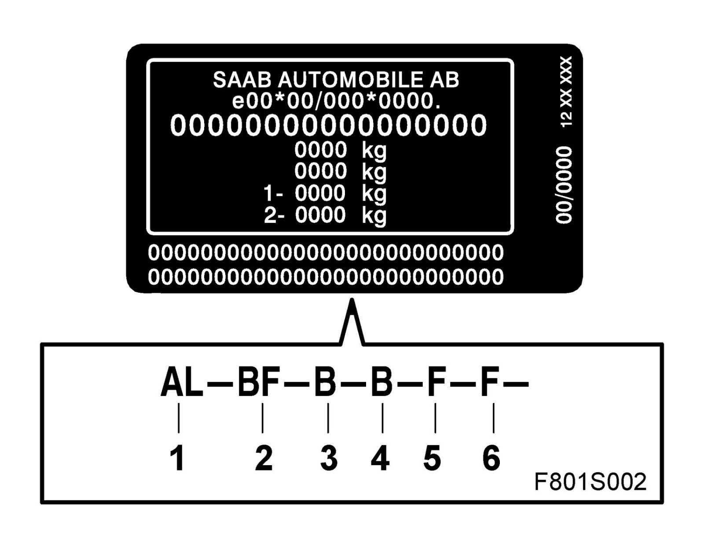
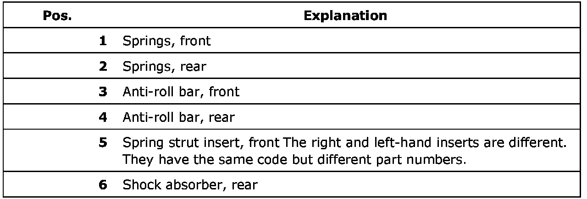

Suspension: Application and ID
VIN plate, springs and shock absorbers

At the bottom of the VIN plate there is a row of characters that describe the chassis configuration (springs and shock absorbers) that the car is equipped with.
These designations refer to EPC.
If all or parts of the code are missing contact your importer. The importer contacts Product Improvement Process (PIP) or Parts Assistance Center (PAC), who compile the details in question and order a new plate.